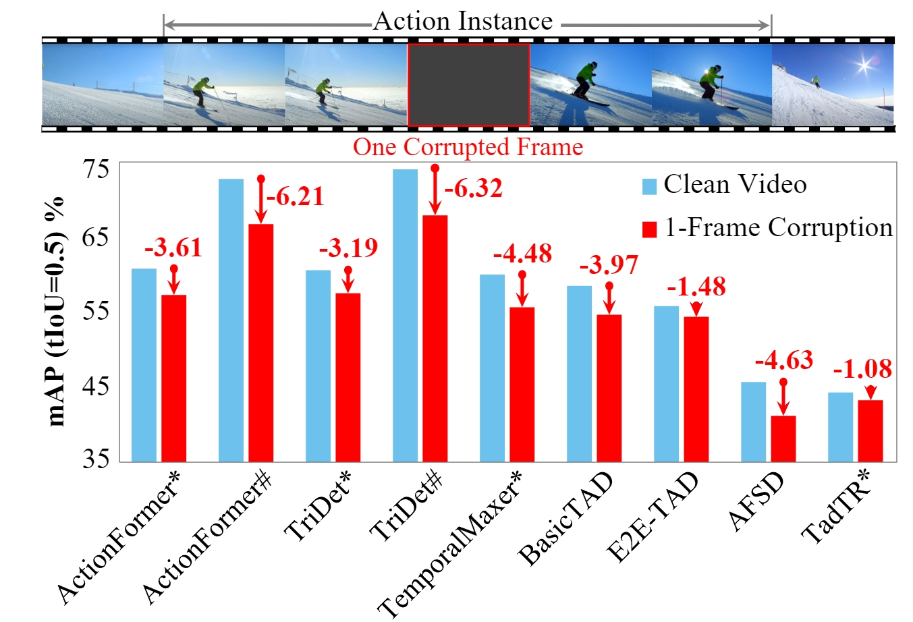
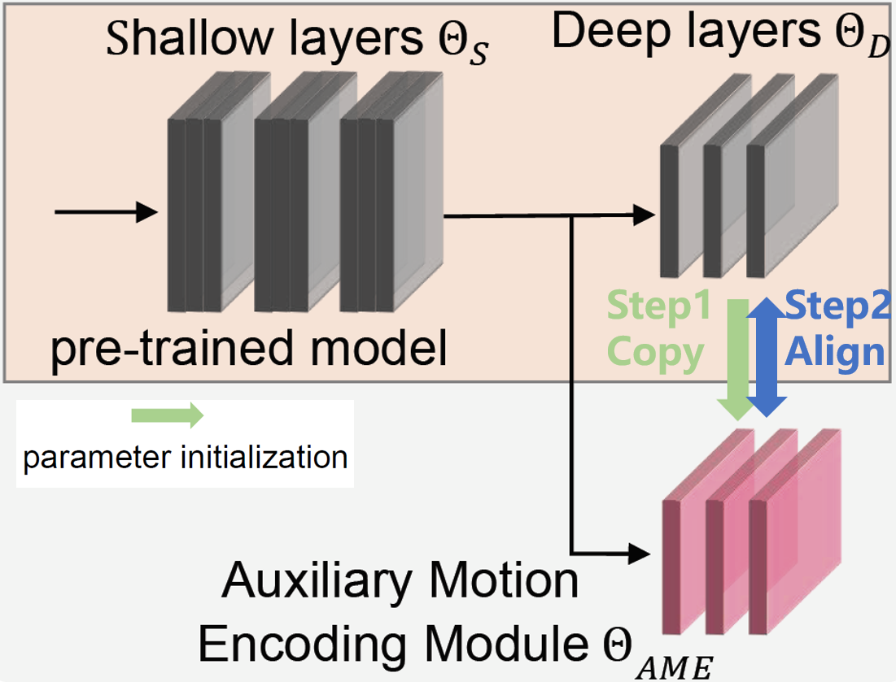
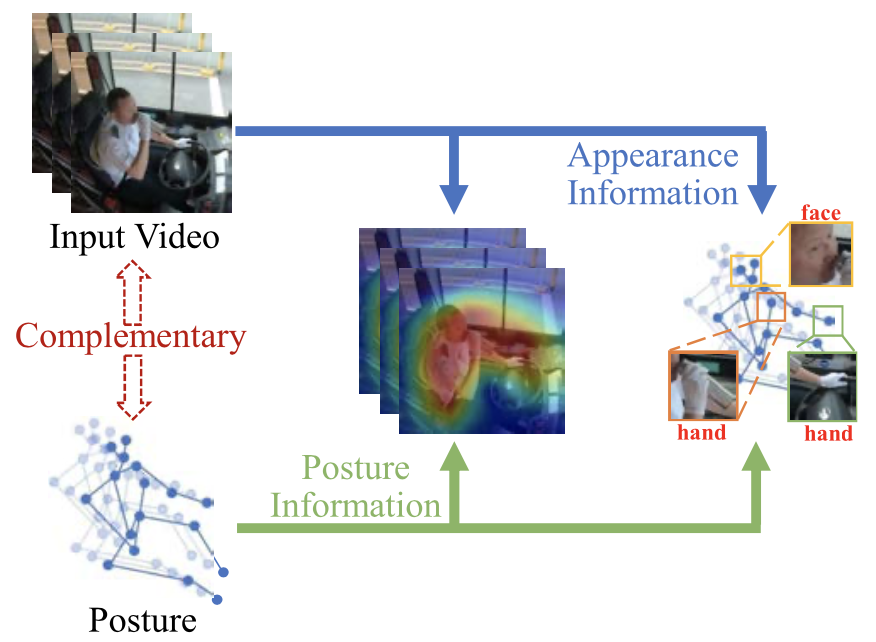
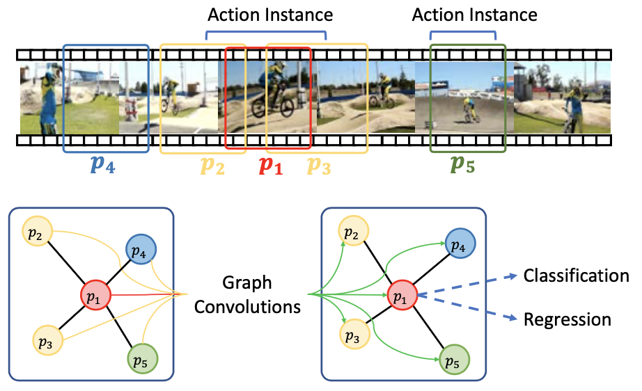
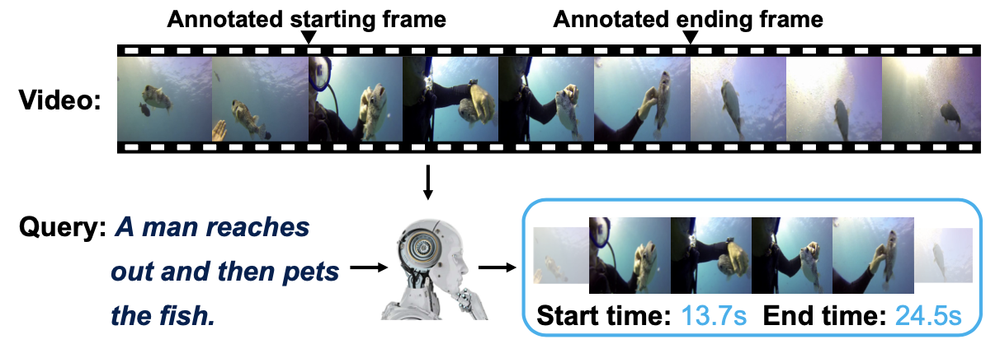
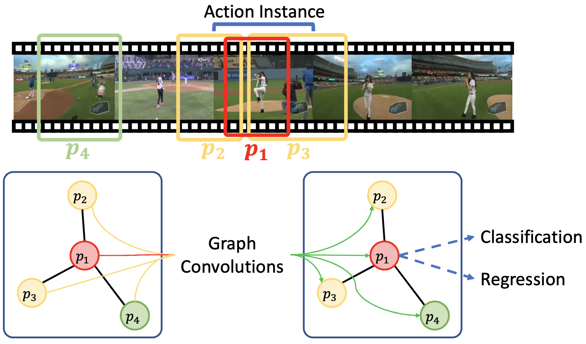
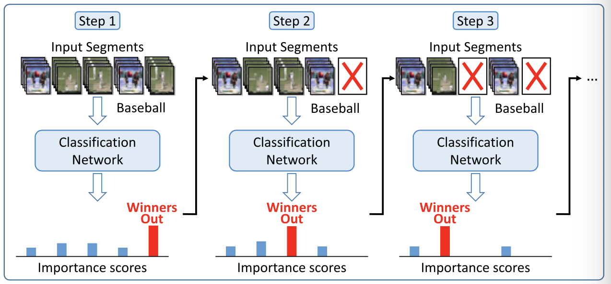

{kind=link}
Research Opportunities
|
|||||||||||
Contact
Email: zengrh [at] smbu (dot) edu (dot) cnNews
Selected Publications (Full List)
|  |
Benchmarking the Robustness of Temporal Action Detection Models Against Temporal Corruptions
CVPR 2024 |
{kind=link}
|  |
Exploring Motion Cues for Video Test-Time Adaptation
ACMMM 2023 |
{kind=link}
|  |
Bidirectional Posture-Appearance Interaction Network for Driver Behavior Recognition
TITS 2022 |
{kind=link}
|  |
Graph Convolutional Module for Temporal Action Localization in Videos
TPAMI 2021 |
{kind=link}
|  |
Dense Regression Network For Video Grounding
CVPR 2020 |
{kind=link}
|  |
Graph Convolutional Networks for Temporal Action Localization
ICCV 2019 |
{kind=link}
|  |
TIP 2019 |
{kind=link}
Data & Software
• PGCN. Temporal Action Localizaton.
• DRN. Video Grounding.
Experience
Service
Conference Program Committee
- International Conference on Machine Learning (ICML)
- Conference on Neural Information Processing Systems (NeurIPS)
- IEEE / CVF Computer Vision and Pattern Recognition Conference (CVPR)
- International Conference on Computer Vision (ICCV)
- European Conference on Computer Vision (ECCV)
Journal Reviewer
- IEEE Transactions on Pattern Analysis and Machine Intelligence (TPAMI)
- IEEE Transactions on Image Processing (TIP)
- IEEE Transactions on Circuits and Systems for Video Technology (TCSVT)
- IEEE Transactions on Multimedia (TMM)